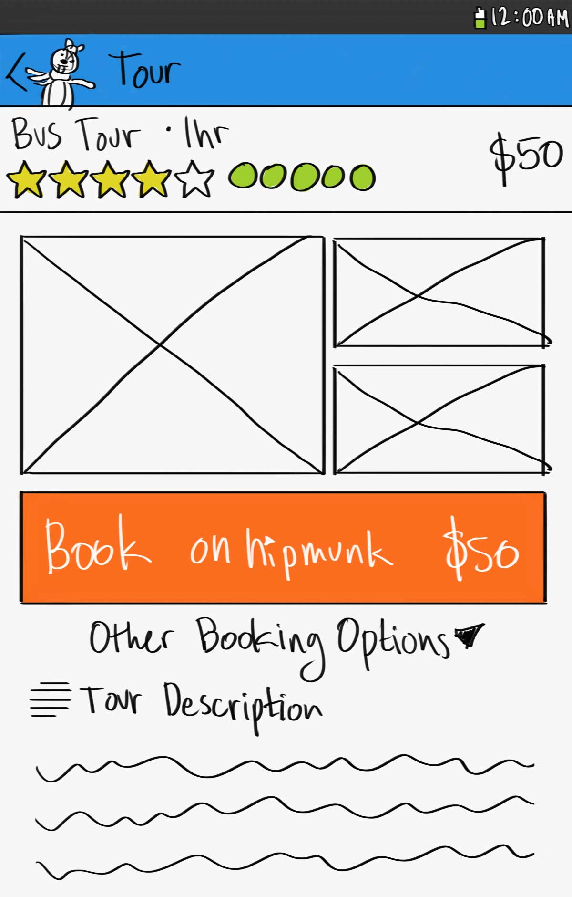

Hipmunk Tours
Goal
For my final project the goal was to add a touring feature to Hipmunk Mobile.
Research The Current Hipmunk App
I started out by researching the app on my mobile phone. Grabbing screenshots of the UI so that I could could figure out a good layout with my new feature.

Persona
After chatting with some users I came up with this persona that I wanted to work with.
Use Case & Userflow
Mary needs to quickly book a tour for her family in San Francisco. She can’t spend too much time searching and would like to see as many tourist attractions as possible. A bus tour fits her needs really well because the kids wouldn’t be able to walk the entire route and she can keep an eye on them while they get to see many sights.





Wireframes
These are some examples of my wireframes, which I used to create my sketches.

Sketches
These are some examples of my sketches, which I used to create my prototype.